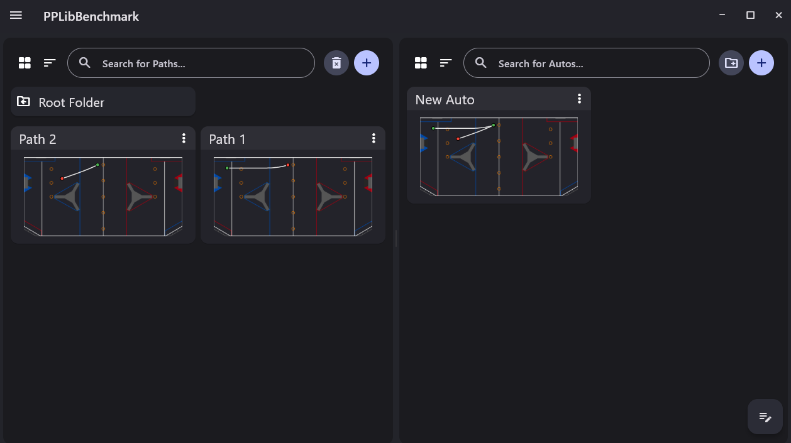
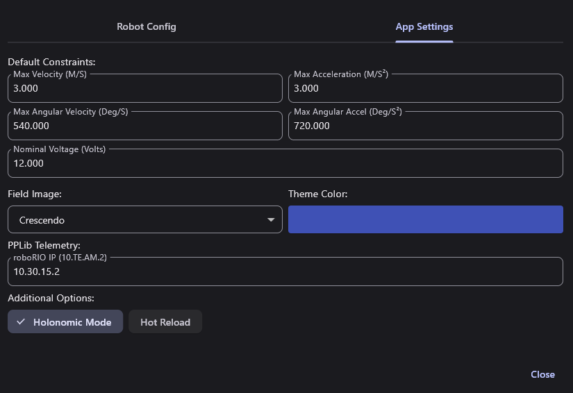
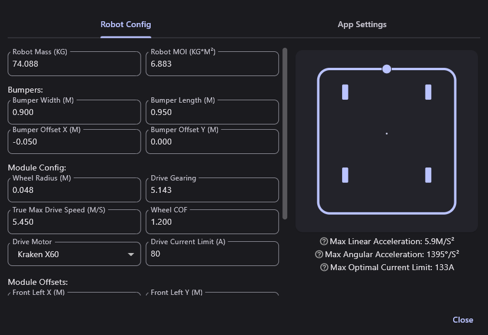
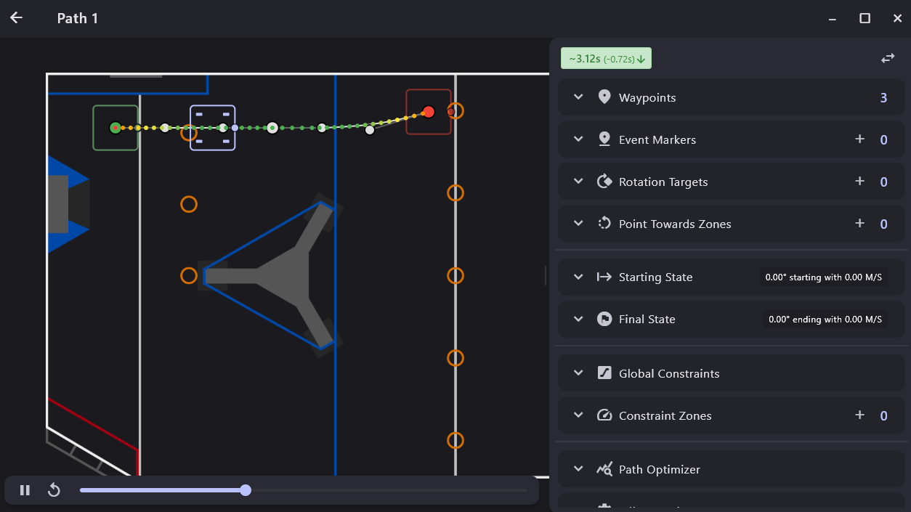
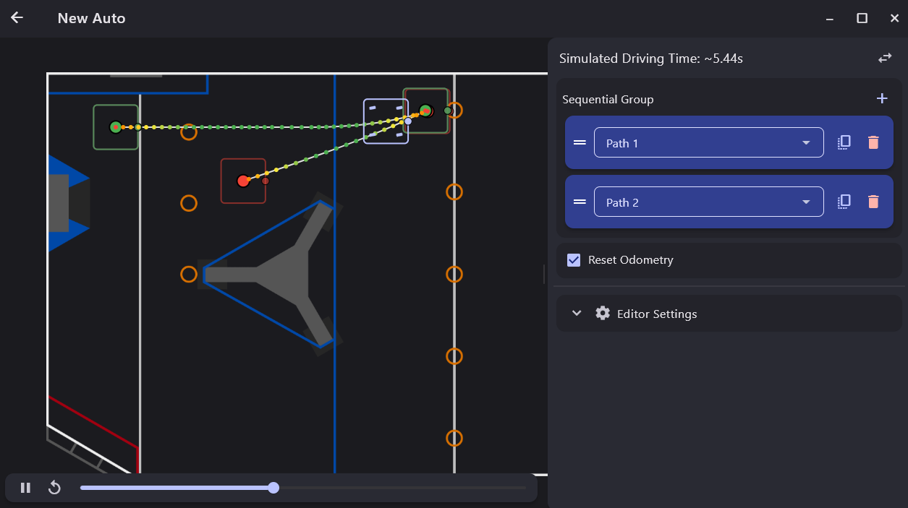
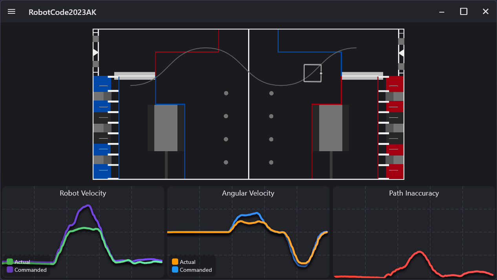

19.1 Using the PathPlanner App#
Why it matters#
Lesson 19 set up the robot side: odometry, speeds, and AutoBuilder. This lesson is the other half, the PathPlanner app on your laptop, where you draw the paths and build the autos the robot follows.
Everything you do in the app is saved as files inside your robot project. Deploy the code and the robot has the new autos. No Java changes needed.
Read this#
Screenshots
The screenshots on this page are from the PathPlanner documentation, © Michael Jansen, used under the MIT License. They show a swerve robot on an older field, so your field picture and robot outline will look different. The buttons are the same.
Walkthrough#
Step 1: Install and open your project#
- Install PathPlanner from the Microsoft Store (it updates itself), or download it from the PathPlanner releases page for Mac and Linux.
- Open it and click Open Robot Project.
- Pick the root folder of your robot project: the WestCoastDrive folder, the one with
build.gradlein it. Notsrc, notdeploy.
PathPlanner creates src/main/deploy/pathplanner/, with paths/ and autos/ folders and a settings.json. Commit these to Git like code. They are the autos.
The main screen is the project browser: paths on the left, autos on the right.

The project browser. From the PathPlanner docs, © Michael Jansen (MIT).
| To | Do this |
|---|---|
| Make a new path or auto | The + button at the top of that side |
| Open one | Click its card |
| Rename one | Click its name on the card |
| Duplicate or delete | The ⋮ menu on the card |
| Get back to the browser | The ← arrow, top left |
| Switch projects, open Settings | The ☰ menu, top left |
Step 2: Settings for a tank drive#
Open ☰ → Settings. It has two tabs, and both matter.
App Settings tab:

App Settings. From the PathPlanner docs, © Michael Jansen (MIT).
| Setting | What to set |
|---|---|
| Holonomic Mode | Turn it OFF. The WCD can't drive sideways. With it on, PathPlanner draws paths the robot can't follow. |
| Default Constraints | Start slow: 1.0 m/s and 1.0 m/s², and about 180 °/s and 360 °/s² for turning. New paths use these. Raise them once paths work. |
| Nominal Voltage | 12. Lower it (say 11) if other mechanisms will be running during auto and pulling the battery down. |
| Field Image | This season's field |
| roboRIO IP | 10.46.74.2, for team 4674. Used by the Telemetry page. |
| Hot Reload | Leave off for now (see Step 8) |
Robot Config tab:

Robot Config, shown in holonomic mode. With Holonomic Mode off, it asks for Trackwidth instead of module offsets. From the PathPlanner docs, © Michael Jansen (MIT).
| Field | WCD value | How to get it |
|---|---|---|
| Robot Mass (kg) | Weigh it | With bumpers and battery. Pounds ÷ 2.205 = kg. |
| Robot MOI (kg·m²) | Estimate | Rough: mass × (length² + width²) ÷ 12, using the frame's length and width in meters. Better: from SysId (see the PathPlanner docs). |
| Trackwidth (m) | Effective track width | From Lab 11, Step 9 |
| Bumper Width / Length (m) | Measure | Only for drawing the robot in the app |
| Wheel Radius (m) | 0.0762 | Half of a 6 in wheel. Use your calibrated diameter ÷ 2 if it's different. |
| Drive Gearing | Your gearbox ratio | Motor turns per wheel turn, a number bigger than 1 (like 8.45) |
| True Max Drive Speed (m/s) | Measure | Full stick, straight line, fresh battery: read the top speed from getRate(). Can't measure yet? Use about 85% of the free speed. |
| Wheel COF | 1.2 | A common starting value for treaded wheels on carpet. Lower it if wheels slip in turns. |
| Drive Motor | CIM | |
| Drive Current Limit (A) | CurrentLimit from Constants |
Per motor |
| Motors per side (if shown) | 2 | Two CIMs per gearbox |
Close Settings. Everything is saved to settings.json, which RobotConfig.fromGUISettings() reads on the robot.
Keep it honest
PathPlanner plans every path from these numbers. A wrong mass, gearing, or max speed makes every path track a little wrong, and it looks exactly like bad PID tuning. Update the config when the robot changes.
Step 3: Draw your first path#
Click + on the Paths side and name it Forward 2m. The path editor opens: the field on the left, the path's settings on the right.

The path editor. From the PathPlanner docs, © Michael Jansen (MIT).
The green dot is the start, the red dot is the end. The line between them is the path. Its dots change from red (slow) to green (fast) to show the robot's speed.
| To | Do this |
|---|---|
| Move a point | Drag it |
| Add a waypoint at the end | Double-click on the field |
| Change the curve's direction at a point | Drag the small control point next to it. Its direction is the robot's heading there; its distance from the point is how wide the curve is. |
| Type exact numbers | Open Waypoints on the right. Each waypoint has X, Y (meters), and Heading (degrees). |
| Zoom | Scroll on the field |
| Undo / redo | Ctrl+Z / Ctrl+Y |
For Forward 2m, open Waypoints and type:
| Waypoint | X (m) | Y (m) | Heading (°) |
|---|---|---|---|
| Start | 2.0 | 4.0 | 0 |
| End | 4.0 | 4.0 | 0 |
The play bar under the field shows a robot driving the path. The time at the top right is how long it should take.
Step 4: The other path settings#
Open each section on the right:
| Section | What it does | For the WCD |
|---|---|---|
| Global Constraints | Max speed and acceleration for this path | Leave Use Default Constraints checked to start |
| Starting State / Final State | Speed at the start and end. 0 m/s means start or stop still. | Leave at 0 for now. A non-zero final speed lets one path flow into the next without stopping. |
| Event Markers | Run a named command at a spot along the path, while driving (Step 6) | |
| Constraint Zones | Slow down in part of the path, like a tight turn | Try one on an S-curve |
| Reversed | Drive this path backward | Check it for paths that back away from a goal |
| Path Optimizer | Reshapes the curve to make it faster | Fun to try; check the result looks sensible |
| Rotation Targets, Point Towards Zones | Holonomic only | Hidden with Holonomic Mode off |
Tank drives can't turn in place mid-path
A WCD follows the curve like a car, always facing where it's going. Every waypoint's heading is the direction of travel there. To end up facing the other way, draw a wide U-turn, or end one path, back up with a Reversed path, and drive forward on the next.
Step 5: Build an auto#
Click ← to go back, then + on the Autos side. Name it Two Paths.

The auto editor. From the PathPlanner docs, © Michael Jansen (MIT).
An auto is a sequential group: commands that run one after another, like andThen in Lesson 11.
- Click + next to Sequential Group and pick Follow Path. Choose
Forward 2m. - Click + again and add a Wait of 1 second.
- Draw a second path that starts exactly where the first one ends, and add it after the wait.
- Leave Reset Odometry checked.
Drag the ═ handles to reorder. The play bar shows the whole auto, and the time at the top is the total.
| You can add | It does |
|---|---|
| Follow Path | Drive one path |
| Named Command | Run a command registered in robot code (Lesson 19, Step 6) |
| Wait | Pause for some seconds |
| Sequential / Parallel / Deadline / Race Group | Nest commands, with the same rules as WPILib's command groups |
Where does the robot start?
With Reset Odometry checked, the auto starts by setting the robot's pose to the start of its first path. So the robot must really be there when the auto begins. In the shop, put a tape mark on the floor and treat it as that spot. At competition, line the robot up exactly where the first path begins.
One path ending and the next starting must line up too. If they don't, the robot jumps to catch up. Use linked waypoints (the link button in a waypoint's settings) to tie them together so moving one moves both.
Step 6: Run a mechanism during an auto#
In robot code, named commands are registered with NamedCommands.registerCommand("Elevator to L2", ...) (Lesson 19, Step 6). In the app:
- Between paths: add a Named Command to the auto's sequential group, and type or pick
Elevator to L2. - While driving: in a path, open Event Markers → +. Drag its slider to where along the path it should start, then pick the named command in its command list. Check Zoned Event to give it an end point too.
Press Enter
When you type a new named command name, press Enter or it isn't saved. The name must match the robot code exactly, including capitals and spaces.
Commands started by an event marker are stopped when the path ends. For something that should keep going, put it in the auto between paths instead, or in a Parallel or Deadline group with the next path.
Step 7: Deploy and run#
- Save happens automatically. Check that
src/main/deploy/pathplanner/autos/Two Paths.autoexists. - Deploy the robot code. The deploy folder goes to the roboRIO with it.
- In Elastic, pick PP: Two Paths from the Auto menu (Lesson 19, Step 7).
- Put the robot on the tape mark and run autonomous.
Step 8: Watch it live#
☰ → Telemetry shows a live view while the robot follows a path, using the roboRIO IP from Settings.

The telemetry page. From the PathPlanner docs, © Michael Jansen (MIT).
The grey robot is where the path wants the robot to be; the white robot is where odometry says it is. The bottom graph, path inaccuracy, is how far apart they are. Use the table in Lesson 19, Step 9 to work out why.
Hot Reload (in App Settings) sends path changes to the robot as soon as you save, with no redeploy. It's great for tuning in the shop.
Turn Hot Reload off at competition
With Hot Reload on, dragging a point on your laptop in the pits changes the auto on the robot. PathPlanner's own docs say it three times: disable it at competition.
Step 9: Commit#
git add .
git commit -m "PathPlanner settings and first autos"
Try it#
- Set up App Settings and Robot Config for the WCD, with Holonomic Mode off
- Draw
Forward 2mwith exact waypoints and run it - Draw an S-curve, then add a constraint zone that slows the tightest part
- Build a two-path auto with a wait in the middle, using linked waypoints where the paths meet
- Add an event marker that raises the elevator while driving
- Use a Reversed path to back away, then drive forward on the next path
- Watch a run on the Telemetry page and note the biggest path inaccuracy
Check yourself#
Where does PathPlanner save paths and autos, and why commit them?
In src/main/deploy/pathplanner/ in the robot project. They're deployed with the code and are the autos, so they belong in Git like code.
Why turn Holonomic Mode off for the WCD?
Holonomic mode assumes the robot can drive sideways and turn independently. A tank drive can't, so it couldn't follow those paths.
With Reset Odometry checked, where does the robot think it starts?
At the start of the auto's first path. The robot must really be there.
An event marker starts the intake, but the intake stops at the end of the path. Why?
Commands started by event markers are stopped when their path ends. Run it in the auto between paths, or in a group with the next path.
Why turn off Hot Reload at competition?
With it on, a change saved on the laptop goes straight to the robot. One accidental drag in the pits changes the match auto.
Steps and screenshots are adapted from the PathPlanner documentation, © Michael Jansen, under the MIT License, rewritten for a differential drive.